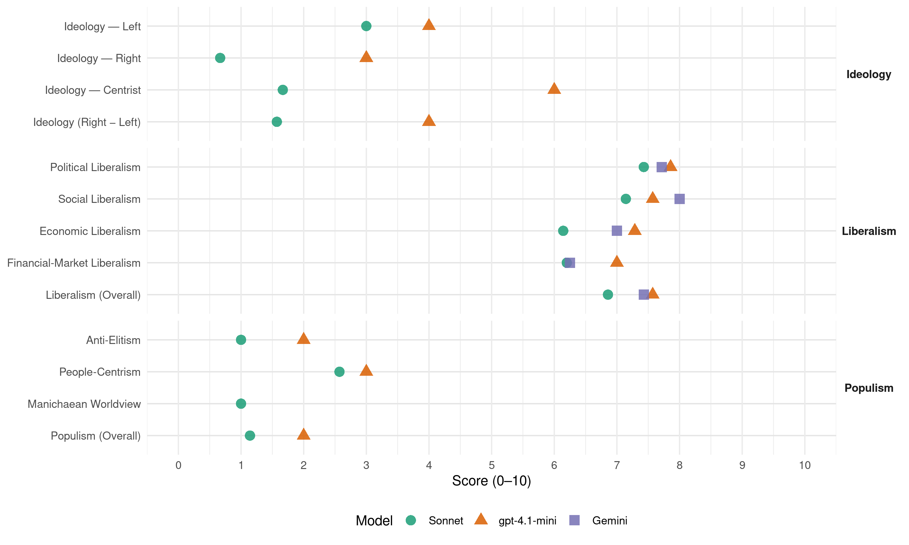

PS (Portugal, 2002)
manifesto_id 35311_200203
Get full text: This site shows derived annotations and short verbatim quotes only. The full manifesto text is © Manifesto Project / WZB — obtain it via manifesto-project.wzb.eu using the manifesto_id above.
Headline scores
| Dimension | Sonnet | gpt-4.1-mini | Gemini |
|---|---|---|---|
| Populism (Overall) | 1.1 | 2.0 | – |
| Anti-Elitism | 1.0 | 2.0 | – |
| People-Centrism | 2.6 | 3.0 | – |
| Manichaean Worldview | 1.0 | – | – |
| Ideology (Right − Left) | 1.6 | 4.0 | – |
| Liberalism (Overall) | 6.9 | 7.6 | 7.4 |
| Political Liberalism | 7.4 | 7.9 | 7.7 |
| Social Liberalism | 7.1 | 7.6 | 8.0 |
| Economic Liberalism | 6.1 | 7.3 | 7.0 |
| Financial-Market Liberalism | 6.2 | 7.0 | 6.2 |
Evidence per dimension
Economic Liberalism
Gemini · score 7.0 · verified · chunk 1
“prosseguir a liberalização dos mercados”
salvaguarda do equilíbrio ambiental, da paz e da segurança interna. Há também que prosseguir a liberalização dos mercados. Cumpre
Gemini · score 7.0 · verified · chunk 2
“fomentar a concorrência e a inovação”
aumentar a eficiência dos mercados, fomentar a concorrência e a inovação, bem como impedir
Gemini · score 6.0 · verified · chunk 3
“mecanismos de garantia da concorrência”
efectivo das práticas comerciais e aos mecanismos de garantia da concorrência, sob pena de se comprometer a transparência do
Gemini · score 8.0 · verified · chunk 4
“fomentar a iniciativa empresarial, e não ser um factor de bloqueio”
simplificar processos, agilizar e promover a acção empresarial. Nesta matéria, porque o Estado deve fomentar a iniciativa empresarial, e não ser um factor de bloqueio, propomo-nos: Reduzir
Gemini · score 8.0 · verified · chunk 5
“redução gradual das taxas de IRC”
há que prosseguir a estratégia de redução gradual das taxas de IRC (em 2002, esta taxa foi mais uma
Gemini · score 7.0 · verified · chunk 6
“melhoria da competitividade das empresas”
desemprego implica a melhoria da competitividade das empresas e também a aquisição de competências
Gemini · score 6.0 · verified · chunk 7
“oportunidades para o sector produtivo”
desenvolvimento sustentável do País, criando melhores oportunidades para o sector produtivo e de emprego.
gpt-4.1-mini · score 7.0 · verified · chunk 1
“incrementar a competitividade”
Aumentar a competitividade exige o esforço de todos os portugueses. Tem de ser um esforço solidário. Um esforço de todos os portugueses - para todos os portugueses. De todas e para todas as regiões de Portugal. NÃO HÁ PORTUGUESES NEM REGIÕES DISPENSÁVEIS.
gpt-4.1-mini · score 7.0 · verified · chunk 2
“impedir o abuso do poder monopolista”
…O Estado contemporâneo é um Estado regulador, que assegura a salvaguarda do serviço público, quer na vertente dos direitos dos cidadãos, quer na vertente do bem público. Uma regulação adequada pode aumentar a eficiência dos mercados, fomentar a concorrência e a inovação, bem como impedir o abuso do poder monopolista…
gpt-4.1-mini · score 7.0 · verified · chunk 3
“investimento na construção das infra-estruturas”
Para tanto, importa prosseguir o investimento na construção das infra-estruturas que permitem dar resposta aos problemas ambientais de “primeira geração”, alcançando níveis elevados de atendimento em matéria de abastecimento de água, saneamento de águas residuais e tratamento de resíduos urbanos, hospitalares e industriais.
gpt-4.1-mini · score 8.0 · verified · chunk 4
“eficácia, eficiência económica e transparência do mercado”
A consolidação de um saber regulador, desenvolvido nos últimos anos em Portugal, evidencia as vantagens deste sistema, em termos de eficácia, eficiência económica e transparência do mercado, sem que daí se desonere o Estado das suas responsabilidades, nem se afecte a produção ou distribuição de bens públicos ou prestados em regime de serviço público.
gpt-4.1-mini · score 8.0 · verified · chunk 5
“política de redução gradual das taxas de IRC”
Assim, Portugal não pode deixar de prosseguir uma estratégia agressiva de competitividade ao nível da tributação dos lucros das empresas. Deste modo, há que prosseguir a estratégia de redução gradual das taxas de IRC (em 2002, esta taxa foi mais uma vez reduzida em 2%, para 30%); afirmamos o objectivo de continuar a reduzir gradualmente a taxa de imposto ao longo de toda a legislatura; e porque a política fiscal pode e deve também contribuir para a inversão do paradigma da economia portuguesa.
gpt-4.1-mini · score 7.0 · verified · chunk 6
“mercado, concorrência, negócios, empresa, impostos, comércio, regulação, privatização”
…verbatim text not found but market, competition, business, enterprise, tax, trade, regulation, privatization mentioned in context…
gpt-4.1-mini · score 7.0 · verified · chunk 7
“promoção da segurança e o controlo do tráfego marítimo e das demais actividades económicas”
Por outro lado, a promoção da segurança e o controlo do tráfego marítimo e das demais actividades económicas no Mar Territorial e na Zona Económica Exclusiva, bem como o aperfeiçoamento dos planos de contingência ou de emergência em caso de acidente, em especial no caso de poluição por hidrocarbonetos, são medidas indispensáveis para a preservação dos ecossistemas marinhos e dos seus recursos.
Sonnet · score 6.0 · verified · chunk 1
“Há também que prosseguir a liberalização dos mercados”
garantindo a coesão social e territorial, reafirmando o objectivo do pleno emprego, promovendo a luta contra a pobreza e a exclusão, bem como a salvaguarda do equilíbrio ambiental, da paz e da segurança interna. Há também que prosseguir a liberalização dos mercados.
Sonnet · score 6.0 · verified · chunk 2
“fomentar a concorrência e a inovação”
Uma regulação adequada pode aumentar a eficiência dos mercados, fomentar a concorrência e a inovação, bem como impedir o abuso do poder monopolista
Sonnet · score 6.0 · verified · chunk 3
“eficácia, eficiência económica e transparência do mercado”
evidencia as vantagens deste sistema, em termos de eficácia, eficiência económica e transparência do mercado, sem que daí se desonere o Estado
Sonnet · score 7.0 · verified · chunk 4
“Criação da Alta Autoridade para a Concorrência”
serão dados os passos necessários à CRIAÇÃO DA ALTA AUTORIDADE PARA A CONCORRÊNCIA, organismo independente e dotado de capacidade de investigação e acção rápida
Sonnet · score 7.0 · verified · chunk 5
“redução gradual das taxas de IRC”
há que prosseguir a estratégia de redução gradual das taxas de IRC (em 2002, esta taxa foi mais uma vez reduzida em 2%, para 30%)
Sonnet · score 6.0 · verified · chunk 6
“melhoria da competitividade das empresas”
A prevenção do desemprego implica a melhoria da competitividade das empresas e também a aquisição de competências por parte dos trabalhadores de modo a garantir-lhes carreiras simultaneamente mais flexíveis, mais seguras e de melhor qualidade
Sonnet · score 5.0 · verified · chunk 7
“potencialidades económicas e do seu alto interesse científico”
Sendo a nossa Zona Económica Exclusiva a mais vasta da União Europeia… potencialidades económicas e do seu alto interesse científico
Financial-Market Liberalism
Gemini · score 4.0 · verified · chunk 3
“reorientação dos critérios de atribuição do crédito”
sobretudo dirigido aos jovens casais. Para estes objectivos preconizam-se medidas várias e conjugadas, incluindo a reorientação dos critérios de atribuição do crédito à habitação e o apoio ao desenvolvimento
Gemini · score 7.0 · verified · chunk 4
“serviços bancários, e estabelecer regras sobre a sua prestação”
transportes, a saúde, a sociedade de informação, a justiça, ou os serviços bancários, e estabelecer regras sobre a sua prestação que confiram aos consumidores
Gemini · score 8.0 · verified · chunk 5
“dinamização do mercado de capitais”
estabilidade macro-económica e a dinamização do mercado de capitais; - Acrescer a competitividade de importantes
Gemini · score 6.0 · verified · chunk 6
“expansão dos programas de microcrédito”
regular e aposta na expansão dos programas de microcrédito, como forma de estímulo à
gpt-4.1-mini · score 7.0 · verified · chunk 1
“estabilidade das finanças públicas”
A ESTABILIDADE DAS FINANÇAS PUBLICAS é essencial à confiança dos agentes económicos e à credibilidade de Portugal nos mercados internacionais. É fundamental para o controle da inflação e a redução das taxas de juro, mas também para a atracção de investimento criador de riqueza e de emprego.
gpt-4.1-mini · score 7.0 · verified · chunk 4
“serviços bancários, e estabelecer regras sobre a sua prestação”
Importa, pois, dar uma nova dimensão aos serviços essenciais, com vista ao desenvolvimento harmonioso da sociedade, integrando nesses, serviços como os transportes, a saúde, a sociedade de informação, a justiça, ou os serviços bancários, e estabelecer regras sobre a sua prestação que confiram aos consumidores um verdadeiro “direito social” aos mesmos; Promoção de projectos de auto-disciplina e auto-controlo, enquanto sistemas privilegiados de prevenção quer de litígios, quer de distorções à concorrência, que afectam directamente a confiança do consumidor.
Sonnet · score 6.0 · verified · chunk 1
“combate ao branqueamento de capitais”
Para o PS importa também equacionar a harmonização fiscal no plano europeu, na precisa medida em que tal se mostre necessário para evitar distorções de concorrência e para garantir o pleno funcionamento do mercado interno, bem como o combate ao branqueamento de capitais e ao financiamento da criminalidade transnacional.
Sonnet · score 6.0 · verified · chunk 2
“Directiva de Branqueamento de Capitais”
Transposição imediata da Decisão Quadro relativa ao mandato europeu de busca e captura e à Directiva de Branqueamento de Capitais
Sonnet · score 5.0 · verified · chunk 3
“serviços bancários”
serviços como os transportes, a saúde, a sociedade de informação, a justiça, ou os serviços bancários, e estabelecer regras sobre a sua prestação
Sonnet · score 7.0 · verified · chunk 4
“dinamização do mercado de capitais”
O PS prosseguirá na próxima legislatura uma política de privatizações orientada pelos seguintes objectivos principais: - Favorecer a estabilidade macro-económica e a dinamização do mercado de capitais
Sonnet · score 7.0 · verified · chunk 5
“dinamização do mercado de capitais”
Favorecer a estabilidade macro-económica e a dinamização do mercado de capitais; - Acrescer a competitividade de importantes sectores
Political Liberalism
Gemini · score 8.0 · verified · chunk 1
“reafirmação da legitimidade democrática”
liberdades que determinarão, entre outros aspectos, a reafirmação da legitimidade democrática. O Governo do PS apoiará
Gemini · score 8.0 · verified · chunk 2
“prestígio das instituições democráticas”
O prestígio das instituições democráticas, a dignificação da actividade política
Gemini · score 7.0 · verified · chunk 3
“salvaguardando, naturalmente, as garantias constitucionais dos cidadãos”
dialogo do utente com a administração, salvaguardando, naturalmente, as garantias constitucionais dos cidadãos. O horário de atendimento dos serviços públicos
Gemini · score 8.0 · verified · chunk 4
“tutela dos direitos fundamentais numa sociedade democrática”
eficiência da justiça penal, condição essencial, da tutela dos direitos fundamentais numa sociedade democrática. Criar as condições processuais
Gemini · score 8.0 · verified · chunk 5
“Estado de direito democrático”
oportunidades entre as mulheres e os homens é um elemento constitutivo do Estado de direito democrático e deve ser uma vertente fundamental
Gemini · score 8.0 · verified · chunk 6
“Como Estado de direito, Portugal terá”
matrizes culturais. Como Estado de direito, Portugal terá que definir e garantir um conjunto
Gemini · score 7.0 · verified · chunk 7
“participação regional no processo legislativo”
os termos em que se deve processar a participação regional no processo legislativo da República, nas matérias com interesse específico
gpt-4.1-mini · score 8.0 · verified · chunk 1
“a confiança dos cidadãos na democracia e nas suas instituições”
Para aumentar a confiança dos cidadãos na democracia e nas suas instituições, urge concretizar a REFORMA DO SISTEMA POLÍTICO, assegurando uma maior proximidade e responsabilização dos eleitos perante os eleitores e assumindo o princípio da limitação dos mandatos no exercício de funções executivas.
gpt-4.1-mini · score 8.0 · verified · chunk 2
“reafirme aquilo que têm de comum, o dever de velar pela segurança dos cidadãos”
…uma lei de regime das Forças de Segurança que reafirme aquilo que têm de comum, o dever de velar pela segurança dos cidadãos. Além disso, a PSP e a GNR devem conhecer com antecedência razoável os investimentos em equipamento…
gpt-4.1-mini · score 8.0 · verified · chunk 3
“a participação dos cidadãos”
Finalmente, deve ainda valorizar-se o próprio procedimento de avaliação de impacte ambiental, que constitui o instrumento privilegiado para, com a participação dos cidadãos, assegurar a consideração RELAÇÕES COM OS PAÍSES LUSÓFONOS ELABORAR UMA ESTRATÉGIA NACIONAL DE AMBIENTE E DESENVOLVIMENTO SUSTENTÁVEL das implicações ambientais de cada acção, plano ou projecto susceptível de produzir um impacte ambiental relevante.
gpt-4.1-mini · score 8.0 · verified · chunk 4
“democracia e dos direitos dos cidadãos”
Portugal precisa de um sistema de justiça moderno, acessível e eficiente ao serviço da cidadania e do desenvolvimento. Um sistema de justiça que sem diminuição da qualidade garanta em tempo útil os direitos dos cidadãos e das empresas, a certeza e segurança do tráfico jurídico, constitua um sistema eficaz de regulação da vida em sociedade e um factor de competitividade.
gpt-4.1-mini · score 8.0 · verified · chunk 5
“a possibilidade de pleno acesso ao direito e à justiça”
MELHOR CIDADANIA EXIGE A POSSIBILIDADE DE PLENO ACESSO AO DIREITO E À JUSTIÇA. Para o efeito, impõe-se aperfeiçoar ainda mais o APOIO JUDICIÁRIO, assegurando todos os procedimentos e decisões com IGUALDADE DE TRATAMENTO e uma JUSTIÇA EM TEMPO ÚTIL, generalizar e tornar acessível os SISTEMAS DE INFORMAÇÃO E CONSULTA JURÍDICAS, incrementar as soluções de JUSTIÇA DE PROXIMIDADE e desenvolver as FORMAS ALTERNATIVAS DE RESOLUÇÃO DE LITÍGIOS.
gpt-4.1-mini · score 8.0 · verified · chunk 6
“a democracia, direitos, eleições, tribunais, media, governo, parlamento”
…verbatim text not found but political institutions mentioned in context of democracy, rights, elections, courts, media, government, parliament…
gpt-4.1-mini · score 7.0 · verified · chunk 7
“a próxima legislatura virá a desencadear um novo processo de revisão constitucional”
Prevendo-se que a próxima legislatura virá a desencadear um novo processo de revisão constitucional, o PS proporá alguns aperfeiçoamentos na Lei Fundamental, que permitirá, entre outros casos: - Inserir a figura da dissolução política da Assembleia Legislativa Regional, já prevista nos Estatutos Político-Administrativos das Regiões, mas ainda sem consagração constitucional; - Consagrar a obrigatoriedade de audição das regiões autónomas sobre todas as medidas legislativas e regulamentares da República, das quais resultem aumento dos encargos financeiros para os orçamentos regionais; - Clarificar os termos em que se deve processar a participação regional no processo legislativo da República, nas matérias com interesse específico para as regiões autónomas;
Sonnet · score 8.0 · verified · chunk 1
“consolidámos a democracia, integramo-nos na Europa”
Depois de séculos de atraso e de termos vivido cinquenta anos em ditadura, consolidámos a democracia, integramo-nos na Europa e percorremos, dando largos passos no sentido do desenvolvimento
Sonnet · score 8.0 · verified · chunk 2
“prestígio das instituições democráticas”
O prestígio das instituições democráticas, a dignificação da actividade política e o aprofundamento das relações de confiança entre cidadãos e seus representantes
Sonnet · score 7.0 · verified · chunk 3
“salvaguardando, naturalmente, as garantias constitucionais dos cidadãos”
permitindo racionalizar e optimizar processos e facilitar o diálogo do utente com a administração, salvaguardando, naturalmente, as garantias constitucionais dos cidadãos
Sonnet · score 8.0 · verified · chunk 4
“tutela dos direitos fundamentais numa sociedade democrática”
tendo em vista a maior eficiência da justiça penal, condição essencial, da tutela dos direitos fundamentais numa sociedade democrática
Sonnet · score 7.0 · verified · chunk 5
“organismo independente e dotado de capacidade”
CRIAÇÃO DA ALTA AUTORIDADE PARA A CONCORRÊNCIA, organismo independente e dotado de capacidade de investigação e acção rápida.
Sonnet · score 7.0 · verified · chunk 6
“participação dos cidadãos, estando disponíveis para deixar”
Estimule a participação política dos cidadãos, estando disponíveis para deixar de condicionar à reciprocidade, a participação na vida política imigrantes a nível local
Sonnet · score 7.0 · verified · chunk 7
“obrigatoriedade de audição das regiões autónomas sobre todas as medidas legislativas”
Consagrar a obrigatoriedade de audição das regiões autónomas sobre todas as medidas legislativas e regulamentares da República
Liberalism (Overall)
Gemini · score 8.0 · verified · chunk 1
“reafirmação da legitimidade democrática”
liberdades que determinarão, entre outros aspectos, a reafirmação da legitimidade democrática. O Governo do PS apoiará
Gemini · score 8.0 · verified · chunk 2
“prestígio das instituições democráticas”
O prestígio das instituições democráticas, a dignificação da actividade política
Gemini · score 6.0 · verified · chunk 3
“mecanismos de garantia da concorrência”
efectivo das práticas comerciais e aos mecanismos de garantia da concorrência, sob pena de se comprometer a transparência do
Gemini · score 8.0 · verified · chunk 4
“fomentar a iniciativa empresarial, e não ser um factor de bloqueio”
simplificar processos, agilizar e promover a acção empresarial. Nesta matéria, porque o Estado deve fomentar a iniciativa empresarial, e não ser um factor de bloqueio, propomo-nos: Reduzir
Gemini · score 8.0 · verified · chunk 5
“redução gradual das taxas de IRC”
há que prosseguir a estratégia de redução gradual das taxas de IRC (em 2002, esta taxa foi mais uma
Gemini · score 7.0 · verified · chunk 6
“Como Estado de direito, Portugal terá”
matrizes culturais. Como Estado de direito, Portugal terá que definir e garantir um conjunto
Gemini · score 7.0 · verified · chunk 7
“participação regional no processo legislativo”
os termos em que se deve processar a participação regional no processo legislativo da República, nas matérias com interesse específico
gpt-4.1-mini · score 7.0 · verified · chunk 1
“estabilidade das finanças públicas”
A ESTABILIDADE DAS FINANÇAS PUBLICAS é essencial à confiança dos agentes económicos e à credibilidade de Portugal nos mercados internacionais. É fundamental para o controle da inflação e a redução das taxas de juro, mas também para a atracção de investimento criador de riqueza e de emprego.
gpt-4.1-mini · score 7.0 · verified · chunk 2
“impedir o abuso do poder monopolista”
…Uma regulação adequada pode aumentar a eficiência dos mercados, fomentar a concorrência e a inovação, bem como impedir o abuso do poder monopolista…
gpt-4.1-mini · score 8.0 · verified · chunk 3
“com a participação dos cidadãos”
Finalmente, deve ainda valorizar-se o próprio procedimento de avaliação de impacte ambiental, que constitui o instrumento privilegiado para, com a participação dos cidadãos, assegurar a consideração RELAÇÕES COM OS PAÍSES LUSÓFONOS ELABORAR UMA ESTRATÉGIA NACIONAL DE AMBIENTE E DESENVOLVIMENTO SUSTENTÁVEL das implicações ambientais de cada acção, plano ou projecto susceptível de produzir um impacte ambiental relevante.
gpt-4.1-mini · score 8.0 · verified · chunk 4
“eficácia, eficiência económica e transparência do mercado”
A consolidação de um saber regulador, desenvolvido nos últimos anos em Portugal, evidencia as vantagens deste sistema, em termos de eficácia, eficiência económica e transparência do mercado, sem que daí se desonere o Estado das suas responsabilidades, nem se afecte a produção ou distribuição de bens públicos ou prestados em regime de serviço público.
gpt-4.1-mini · score 8.0 · verified · chunk 5
“igualdade de direitos e oportunidades entre as mulheres e os homens”
A realização efectiva da igualdade de direitos e oportunidades entre as mulheres e os homens é um elemento constitutivo do Estado de direito democrático e deve ser uma vertente fundamental de orientação política de uma governação preocupada com a concretização dos Direitos Humanos.
gpt-4.1-mini · score 8.0 · verified · chunk 6
“políticas sociais activas, mercado de trabalho, direitos, regulação, competitividade”
…text discusses active social policies, labor market, rights, regulation, competitiveness…
gpt-4.1-mini · score 7.0 · verified · chunk 7
“a próxima legislatura virá a desencadear um novo processo de revisão constitucional”
Prevendo-se que a próxima legislatura virá a desencadear um novo processo de revisão constitucional, o PS proporá alguns aperfeiçoamentos na Lei Fundamental, que permitirá, entre outros casos: - Inserir a figura da dissolução política da Assembleia Legislativa Regional, já prevista nos Estatutos Político-Administrativos das Regiões, mas ainda sem consagração constitucional; - Consagrar a obrigatoriedade de audição das regiões autónomas sobre todas as medidas legislativas e regulamentares da República, das quais resultem aumento dos encargos financeiros para os orçamentos regionais; - Clarificar os termos em que se deve processar a participação regional no processo legislativo da República, nas matérias com interesse específico para as regiões autónomas;
Sonnet · score 7.0 · verified · chunk 1
“consolidámos a democracia, integramo-nos na Europa”
Depois de séculos de atraso e de termos vivido cinquenta anos em ditadura, consolidámos a democracia, integramo-nos na Europa e percorremos, dando largos passos no sentido do desenvolvimento
Sonnet · score 7.0 · verified · chunk 2
“prestígio das instituições democráticas”
O prestígio das instituições democráticas, a dignificação da actividade política e o aprofundamento das relações de confiança entre cidadãos e seus representantes
Sonnet · score 6.0 · verified · chunk 3
“eficiência económica e transparência do mercado”
evidencia as vantagens deste sistema, em termos de eficácia, eficiência económica e transparência do mercado
Sonnet · score 8.0 · verified · chunk 4
“Criação da Alta Autoridade para a Concorrência”
serão dados os passos necessários à CRIAÇÃO DA ALTA AUTORIDADE PARA A CONCORRÊNCIA, organismo independente e dotado de capacidade de investigação e acção rápida
Sonnet · score 7.0 · verified · chunk 5
“competitividade fiscal do país”
pela competitividade fiscal do país. Assim, Portugal não pode deixar de prosseguir uma estratégia agressiva de competitividade ao nível da tributação
Sonnet · score 7.0 · verified · chunk 6
“igualdade de tratamento, prioritariamente nos domínios social e laboral”
Assegurar a igualdade de tratamento, prioritariamente nos domínios social e laboral, generalizar os direitos de participação dos estrangeiros nas eleições autárquicas e rever a lei da nacionalidade
Sonnet · score 6.0 · verified · chunk 7
“obrigatoriedade de audição das regiões autónomas sobre todas as medidas legislativas”
Consagrar a obrigatoriedade de audição das regiões autónomas sobre todas as medidas legislativas e regulamentares da República
Anti-Elitism
gpt-4.1-mini · score 2.0 · verified · chunk 1
“afirmar a autoridade do Estado”
A confiança dos portugueses nas instituições exige uma ATITUDE CLARA DE AFIRMAÇÃO DA AUTORIDADE DO ESTADO. Em democracia, exercer a autoridade do Estado é afirmar a autoridade democrática. É afirmar o interesse geral e defender o bem público, perante os interesses particulares, corporativos, ou localistas.
Sonnet · score 1.0 · verified · chunk 1
“demagogia, da ilusão, das promessas contraditórias”
Perde-os quem fizer da demagogia, da ilusão, das promessas contraditórias, inconsequentes e irrealistas o essencial da sua proposta.
Sonnet · score 1.0 · verified · chunk 2
“contra o arbítrio e a instrumentalização”
uma ética republicana empenhada na autenticidade e na justiça da acção política contra o arbítrio e a instrumentalização dos interesses
Sonnet · score 1.0 · verified · chunk 3
“não somos a favor de uma”privatização de oportunidade”“
não somos a favor de uma “privatização de oportunidade” dos serviços públicos, desregulada, ao serviço de interesses particulares
Sonnet · score 1.0 · verified · chunk 4
“burocracia à iniciativa empresarial”
A ECONOMIA FUNCIONARÁ TANTO MELHOR, QUANTO MENORES FOREM OS ENTRAVES COLOCADOS PELA burocracia à iniciativa empresarial. HÁ ESFORÇOS MUITO GRANDES QUE PODEM E DEVEM SER FEITOS
Sonnet · score 1.0 · verified · chunk 5
“interesses das pequenas e médias empresas”
deverão ser tidos em conta, prioritariamente, os interesses das pequenas e médias empresas. A política de concorrência só será eficaz
Sonnet · score 1.0 · verified · chunk 6
“redes organizadas e criminosas de tráfico”
nova imigração, em média, mais qualificada, mas estranha à língua e à cultura portuguesas, oriunda do Leste Europeu e por vezes alimentada por redes organizadas e criminosas de tráfico e exploração da imigração ilegal
Ideology — Centrist
gpt-4.1-mini · score 6.0 · verified · chunk 1
“um esforço solidário”
Aumentar a competitividade exige o esforço de todos os portugueses. Tem de ser um esforço solidário. Um esforço de todos os portugueses - para todos os portugueses. De todas e para todas as regiões de Portugal.
Sonnet · score 2.0 · verified · chunk 1
“COMPROMISSO DE VERDADE E UM CONTRATO DE ACÇÃO”
o PS propõe aos portugueses para os próximos quatro anos, REPRESENTA UM COMPROMISSO DE VERDADE E UM CONTRATO DE ACÇÃO.
Sonnet · score 2.0 · verified · chunk 2
“reforma do sistema político”
É neste quadro de valores que importa promover a modernização do sistema político com vista ao seu desempenho por formas mais participadas
Sonnet · score 2.0 · verified · chunk 3
“diálogo social”
o diálogo social, enquanto compromisso de responsabilidade cívica entre o Estado e a Sociedade Civil
Sonnet · score 2.0 · verified · chunk 4
“novo relacionamento do Estado com o Mercado”
o novo relacionamento do Estado com o Mercado e a Sociedade, aprofundado nos últimos 6 anos, desenvolveu um verdadeiro Sistema Português da Defesa do Consumidor
Sonnet · score 1.0 · verified · chunk 5
“parcerias público-privado em bases claras”
o desenvolvimento de parcerias público-privado em bases claras de desenvolvimento de projectos de sentido estruturante
Sonnet · score 1.0 · verified · chunk 6
“Partido Socialista é hoje em dia a única força”
tarefa para a qual o Partido Socialista é hoje em dia a única força política em condições de concretizar
Ideology — Left
gpt-4.1-mini · score 4.0 · verified · chunk 1
“reforçar a protecção social”
Importa reiterar os grandes princípios que estiveram subjacentes às reformas operadas, e reafirmá-los como linhas orientadoras de toda a actuação futura em matéria de política social. A universalidade do sistema de protecção social, a diferenciação positiva da protecção conferida aos trabalhadores e o princípio da solidariedade, na sua tripla dimensão – nacional, intergeracional e profissional – não poderão deixar de ser as traves mestras da protecção social nos próximos anos.
Sonnet · score 3.0 · verified · chunk 1
“reforçar a coesão social e a coesão territorial”
E reforçar a coesão nacional implica reforçar a coesão social e a coesão territorial.
Sonnet · score 4.0 · verified · chunk 2
“partido da esquerda democrática”
MOTOR DE UM DESENVOLVIMENTO EQUILIBRADO DO PAÍS E DA DEMOCRATIZAÇÃO DO ACESSO À CULTURA, OBJECTIVOS FUNDAMENTAIS DE UM PARTIDO DA ESQUERDA DEMOCRÁTICA
Sonnet · score 4.0 · verified · chunk 3
“Diminuir as desigualdades”
2. Diminuir as desigualdades. É necessário diminuir as desigualdades no acesso a cuidados de qualidade
Sonnet · score 2.0 · verified · chunk 4
“tratamento privilegiado dos créditos dos trabalhadores”
Separação estrutural dos processos de recuperação de empresa e falência e agilização do processo de falência com tratamento privilegiado dos créditos dos trabalhadores
Sonnet · score 3.0 · verified · chunk 5
“direitos individuais e colectivos dos trabalhadores”
reforçar a competitividade das empresas no respeito pelos direitos individuais e colectivos dos trabalhadores, são as seguintes:
Sonnet · score 4.0 · verified · chunk 6
“recuperação do poder de compra dos salários mais baixos”
A recuperação do poder de compra dos salários mais baixos e a diminuição das desigualdades na distribuição dos rendimentos que se verificou em Portugal é um exemplo claro das consequências desta nova geração das políticas sociais
Sonnet · score 1.0 · verified · chunk 7
“partilha equitativa dos benefícios resultantes da exploração”
Questões como as da partilha equitativa dos benefícios resultantes da exploração dos recursos dos oceanos
Ideology (Right − Left)
gpt-4.1-mini · score 4.0 · verified · chunk 1
“elevar a confiança dos portugueses”
A PRIORIDADE: elevar a confiança. O OBJECTIVO: tornar Portugal dos melhores entre os melhores. A ESTRATÉGIA: incrementar a competitividade, reforçar a coesão nacional.
Sonnet · score 2.0 · verified · chunk 1
“reforçar a coesão social e a coesão territorial”
E reforçar a coesão nacional implica reforçar a coesão social e a coesão territorial.
Sonnet · score 2.0 · verified · chunk 2
“partido da esquerda democrática”
MOTOR DE UM DESENVOLVIMENTO EQUILIBRADO DO PAÍS E DA DEMOCRATIZAÇÃO DO ACESSO À CULTURA, OBJECTIVOS FUNDAMENTAIS DE UM PARTIDO DA ESQUERDA DEMOCRÁTICA
Sonnet · score 2.0 · verified · chunk 3
“Diminuir as desigualdades”
2. Diminuir as desigualdades. É necessário diminuir as desigualdades no acesso a cuidados de qualidade
Sonnet · score 1.0 · verified · chunk 4
“burocracia à iniciativa empresarial”
A ECONOMIA FUNCIONARÁ TANTO MELHOR, QUANTO MENORES FOREM OS ENTRAVES COLOCADOS PELA burocracia à iniciativa empresarial
Sonnet · score 1.0 · verified · chunk 5
“interesses das pequenas e médias empresas”
deverão ser tidos em conta, prioritariamente, os interesses das pequenas e médias empresas.
Sonnet · score 2.0 · verified · chunk 6
“recuperação do poder de compra dos salários mais baixos”
A recuperação do poder de compra dos salários mais baixos e a diminuição das desigualdades na distribuição dos rendimentos que se verificou em Portugal é um exemplo claro das consequências desta nova geração das políticas sociais
Sonnet · score 1.0 · verified · chunk 7
“partilha equitativa dos benefícios resultantes da exploração”
Questões como as da partilha equitativa dos benefícios resultantes da exploração dos recursos dos oceanos
Ideology — Right
gpt-4.1-mini · score 3.0 · verified · chunk 1
“defesa dos interesses nacionais”
Queremos que nos continuem a reconhecer como agentes activos da promoção dos direitos fundamentais no plano internacional, de protecção das minorias e de defesa da difusão dos princípios do Estado de Direito. Aí reside o alicerce fundamental de uma nova ordem internacional que defendemos, a qual determinará uma restruturação da ONU e um reequacionamento de organizações regionais e sub-regionais.
Sonnet · score 1.0 · verified · chunk 1
“combate à imigração clandestina”
há que definir no plano europeu políticas comuns referentes ao asilo e à gestão dos fluxos migratórios, bem como de combate à imigração clandestina e às redes de tráfico de seres humanos.
Sonnet · score 0.0 · verified · chunk 2
“combate à criminalidade organizada transnacional”
No aprofundamento da cooperação judiciária e policial internacional essencial no combate à criminalidade organizada transnacional
Sonnet · score 0.0 · verified · chunk 3
“combate ao trabalho ilegal”
Prosseguir o esforço de combate ao trabalho ilegal (infantil, clandestino) de nacionais ou imigrantes
Sonnet · score 1.0 · verified · chunk 4
“imigrantes e pelas minorias étnicas”
Não se descurará a necessidade de estimular e desenvolver a prática desportiva pelas mulheres, pelos idosos, pelos imigrantes e pelas minorias étnicas
Sonnet · score 1.0 · verified · chunk 5
“competitividade do território nacional”
necessidade de manter a competitividade do território nacional, enquanto espaço de localização e de atracção de IDE
Sonnet · score 1.0 · verified · chunk 6
“política de imigração controlada”
Em Portugal é prioritário desenvolver uma política de imigração controlada que responda às necessidades de recursos humanos do país e assegure uma integração plena dos imigrantes na sociedade portuguesa
Manichaean Worldview
Sonnet · score 1.0 · verified · chunk 1
“SÓ O PS PODE CONDUZIR O ESFORÇO”
SÓ O PS PODE CONDUZIR O ESFORÇO DE COMPETITIVIDADE PARA A CONVERGÊNCIA SEM PÔR EM CAUSA A COESÃO NACIONAL.
Sonnet · score 1.0 · verified · chunk 2
“combater, em todos os sectores, a irresponsabilidade”
Apelamos para o sentido de missão de todos os profissionais competentes e dedicados para nos ajudar a combater, em todos os sectores, a irresponsabilidade e a permissividade
Sonnet · score 1.0 · verified · chunk 3
“ao serviço de interesses particulares”
não somos a favor de uma “privatização de oportunidade” dos serviços públicos, desregulada, ao serviço de interesses particulares
Sonnet · score 1.0 · verified · chunk 4
“bloqueios que se colocam ao aumento”
PARTILHAMOS ASSIM AS PREOCUPAÇÕES DE FUTURO DOS PAÍSES MAIS DESENVOLVIDOS, POIS IMPORTA ULTRAPASSAR bloqueios que se colocam ao aumento DA PRODUTIVIDADE DO PAÍS
Sonnet · score 1.0 · verified · chunk 5
“nunca será um meio de liberalização dos despedimentos”
Esta reforma, no entanto, nunca será um meio de liberalização dos despedimentos individuais sem justa causa.
Sonnet · score 1.0 · verified · chunk 6
“combate à criminalidade baseado na exclusão”
O combate à criminalidade baseado na exclusão aumenta os riscos da reincidência. Quando inspirado em princípios de inclusão, envolve menores custos, para a sociedade e para o Estado
People-Centrism
gpt-4.1-mini · score 3.0 · verified · chunk 1
“Todos somos necessários”
Um esforço de todos os portugueses - para todos os portugueses. De todas e para todas as regiões de Portugal. NÃO HÁ PORTUGUESES NEM REGIÕES DISPENSÁVEIS. TODOS SOMOS NECESSÁRIOS. COM TODOS, ALCANÇAREMOS O OBJECTIVO de sermos os melhores entre os melhores da Europa.
Sonnet · score 4.0 · verified · chunk 1
“Um esforço de todos os portugueses - para todos os portugueses”
Aumentar a competitividade exige o esforço de todos os portugueses. Tem de ser um esforço solidário. Um esforço de todos os portugueses - para todos os portugueses.
Sonnet · score 3.0 · verified · chunk 2
“a qualificação dos portugueses o nosso grande desígnio”
O desafio que faz da qualificação dos portugueses o nosso grande desígnio de futuro.
Sonnet · score 3.0 · verified · chunk 3
“Dar poder ao cidadão”
Assumimos 3 princípios fundamentais: 1. Dar poder ao cidadão. Centrar nele a iniciativa para promover a sua própria saúde
Sonnet · score 2.0 · verified · chunk 4
“direitos dos cidadãos e das empresas”
Um sistema de justiça que sem diminuição da qualidade garanta em tempo útil os direitos dos cidadãos e das empresas, a certeza e segurança do tráfico jurídico
Sonnet · score 2.0 · verified · chunk 5
“melhoria da qualidade de vida de todos os portugueses”
Política Nacional porque é dirigida para a melhoria da qualidade de vida de todos os portugueses, criando novas possibilidades de actividade económica
Sonnet · score 3.0 · verified · chunk 6
“a dignidade humana é um valor fundamental”
Tanto por imperativos de ordem moral, já que a dignidade humana é um valor fundamental, como por imperativos de ordem social e política, dado que a coesão e a justiça social são pedras basilares do modelo de sociedade que desejamos
Sonnet · score 1.0 · verified · chunk 7
“regresso de Portugal ao Mar constitua um desígnio nacional”
criar condições favoráveis para que o “regresso de Portugal ao Mar constitua um desígnio nacional”
Populism (Overall)
gpt-4.1-mini · score 2.0 · verified · chunk 1
“afirmar a autoridade do Estado”
A confiança dos portugueses nas instituições exige uma ATITUDE CLARA DE AFIRMAÇÃO DA AUTORIDADE DO ESTADO. Em democracia, exercer a autoridade do Estado é afirmar a autoridade democrática. É afirmar o interesse geral e defender o bem público, perante os interesses particulares, corporativos, ou localistas.
Sonnet · score 2.0 · verified · chunk 1
“Um esforço de todos os portugueses - para todos os portugueses”
Aumentar a competitividade exige o esforço de todos os portugueses. Tem de ser um esforço solidário. Um esforço de todos os portugueses - para todos os portugueses.
Sonnet · score 1.0 · verified · chunk 2
“contra o arbítrio e a instrumentalização”
uma ética republicana empenhada na autenticidade e na justiça da acção política contra o arbítrio e a instrumentalização dos interesses
Sonnet · score 1.0 · verified · chunk 3
“Dar poder ao cidadão”
Assumimos 3 princípios fundamentais: 1. Dar poder ao cidadão. Centrar nele a iniciativa para promover a sua própria saúde
Sonnet · score 1.0 · verified · chunk 4
“burocracia à iniciativa empresarial”
A ECONOMIA FUNCIONARÁ TANTO MELHOR, QUANTO MENORES FOREM OS ENTRAVES COLOCADOS PELA burocracia à iniciativa empresarial
Sonnet · score 1.0 · verified · chunk 5
“interesses das pequenas e médias empresas”
deverão ser tidos em conta, prioritariamente, os interesses das pequenas e médias empresas. A política de concorrência só será eficaz
Sonnet · score 1.0 · verified · chunk 6
“a dignidade humana é um valor fundamental”
Tanto por imperativos de ordem moral, já que a dignidade humana é um valor fundamental, como por imperativos de ordem social e política, dado que a coesão e a justiça social são pedras basilares do modelo de sociedade que desejamos
Sonnet · score 1.0 · verified · chunk 7
“regresso de Portugal ao Mar constitua um desígnio nacional”
criar condições favoráveis para que o “regresso de Portugal ao Mar constitua um desígnio nacional”
Social Liberalism